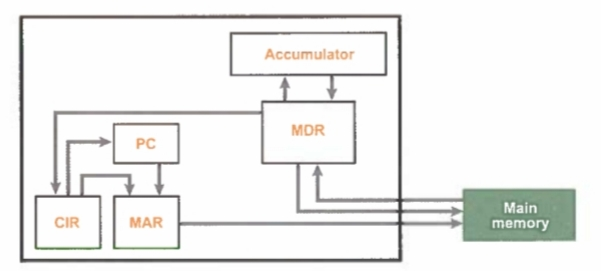

Back

- Contains the memory address to the next instruction to be executed.
- This may be the next instruction in the program or a different one (copied from the CIR) if the current instruction is a branch or jump instruction.
- Holds the instruction that is currently being executed.
- The register will split the instructions into sections: opcode and operand
- Opcode is the code for the assembly instruction to execute.
- The opcode will include an addressing mode which defines the manner in which the operand should be handled. This is to differentiate between when the actual data is passed to the operation and when the address of the data is passed in, as
well as other situations.
- Operand is the data that the instruction may interact with.
- This register stores an address in memory.
- It may store the address from which to access data/instruction or to write data.
- Since this register stores a memory address, the size will be defined by the word size of the CPU architecture.
- This register stores the data received or to be written to memory.
- The size of this register also depends on the word size of the CPU architecture.
- Is used to store intermediate results for the ALU.